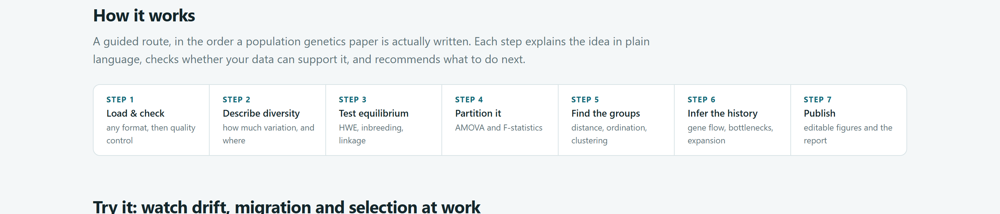
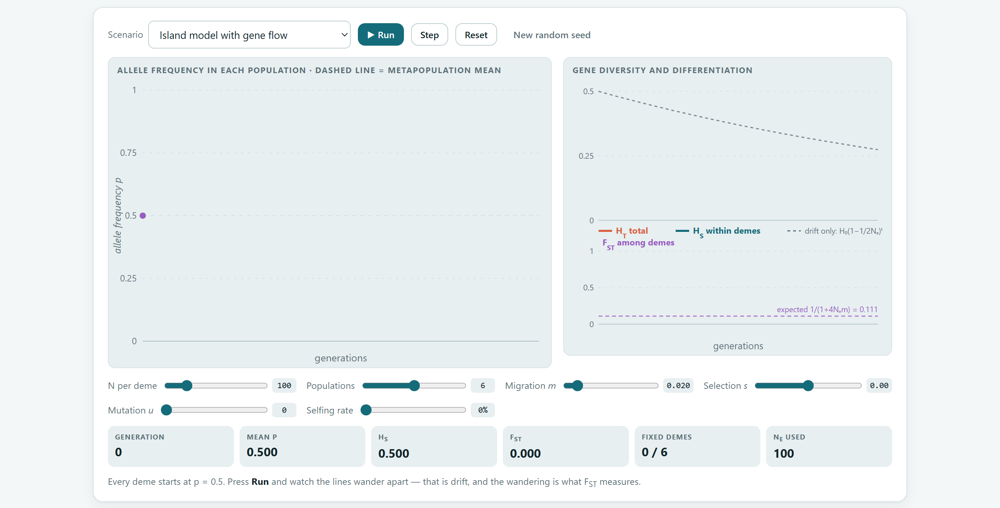
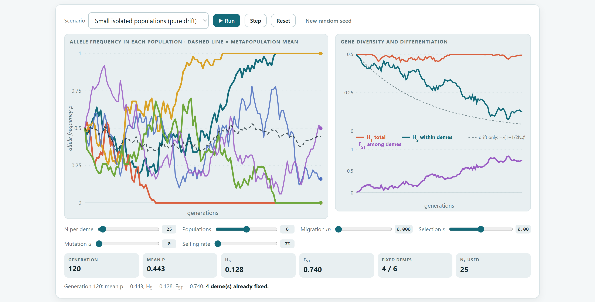
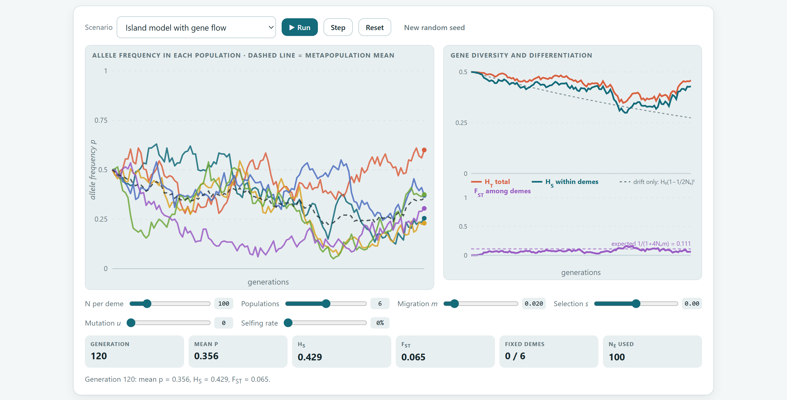
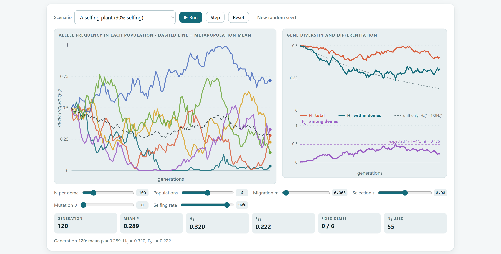
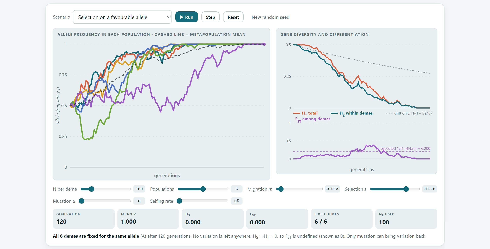
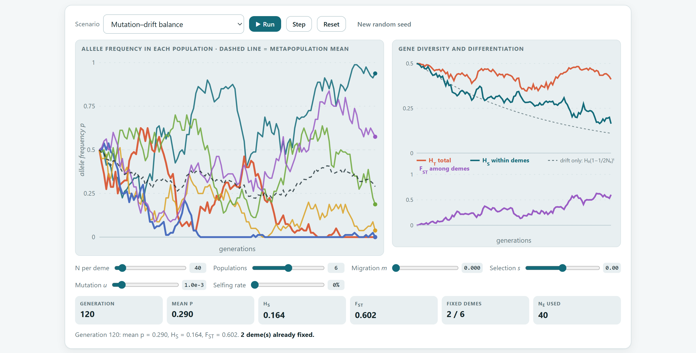
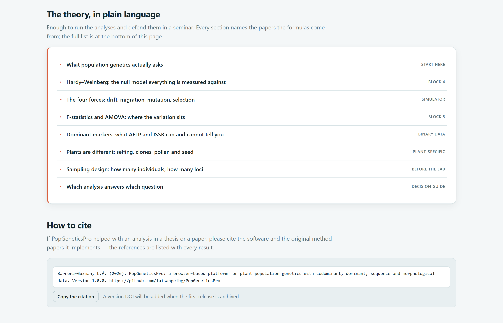
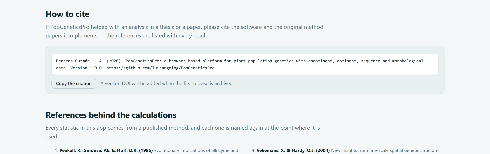

La portada de la app no es solo una página de bienvenida. Es un mapa de todo el programa, un laboratorio donde puedes ver en movimiento cómo actúan la deriva, el flujo génico, la selección, la mutación y la autofecundación, y un resumen de la teoría con las referencias que respaldan cada cálculo.
Al abrir index.html aparece el Bloque 1. Se lee de arriba abajo, como un folleto: primero qué hace el programa, luego cómo se recorre, después un simulador para experimentar, la lista de métodos, la teoría y, al final, cómo citarlo.
| Sección en la app | Qué contiene | Para qué te sirve |
|---|---|---|
| Presentación cuatro botones y cinco garantías | Start with my data, Play with the simulator, Read the theory y How to cite; ilustración con tres poblaciones y un gráfico de ancestría. | Ir directo a cargar datos o a cualquiera de las secciones de abajo. |
| How it works | Los siete pasos de un estudio, del archivo al artículo (figura 2.1). | Ubicar cada bloque dentro de la lógica de una investigación. |
| Try it: watch drift, migration and selection at work | El simulador de Wright–Fisher (secciones 2.2 y 2.3). | Entender, jugando, qué significan HS, HT y FST. |
| What's inside | Una tarjeta por bloque de análisis, con ilustración y descripción. | Saltar a un bloque con un clic. |
| Every kind of data a plant study produces | Los cuatro grandes tipos de marcador y lo que permite cada uno. | Confirmar que tus datos caben en el programa (capítulo 1, sección 1.4). |
| Methods covered | Galería de 18 métodos agrupados por familia (tabla 2.3). | Ver de un vistazo todo lo que se puede calcular. |
| What it brings together | Las capacidades que reúne el programa en un solo flujo. | Justificar su uso en un proyecto o una tesis. |
| The theory, in plain language | Ocho temas desplegables con fórmulas, reglas prácticas y referencias (sección 2.4). | Repasar la teoría antes de interpretar o defender resultados. |
| How to cite y References behind the calculations | La cita del programa lista para copiar y las 25 referencias de los métodos (sección 2.5). | Citar correctamente en tu artículo. |

| Paso | En la app | Qué se hace | Bloques |
|---|---|---|---|
| 1 | Load & check | Cargar cualquier formato y revisar la calidad de los datos. | 2 |
| 2 | Describe diversity | Cuánta variación hay y dónde está. | 3 |
| 3 | Test equilibrium | Hardy–Weinberg, endogamia y ligamiento. | 4 |
| 4 | Partition it | Repartir la variación con AMOVA y estadísticos F. | 5 |
| 5 | Find the groups | Distancias, ordenación y agrupamiento. | 6 7 |
| 6 | Infer the history | Flujo génico, cuellos de botella, expansión y tiempos de divergencia. | 8 9 |
| 7 | Publish | Figuras editables e informe. | 10 |
| Familia | Métodos | Bloques |
|---|---|---|
| Diversidad | Frecuencias alélicas por locus y población · índices de diversidad (Na, Ne, Ho, He, uHe, I, PIC) · Hardy–Weinberg con pruebas χ² y exactas · desequilibrio de ligamiento (r², D′, r̄d) | 3 4 |
| Estructura | Diferenciación por pares (FST, G′ST, D de Jost, ΦPT) · AMOVA jerárquico · aislamiento por distancia · autocorrelación espacial y Sp | 5 6 9 |
| Distancia | Árboles NJ y UPGMA con bootstrap · coordenadas principales de individuos o poblaciones | 6 |
| Agrupamiento | Agrupamiento bayesiano con ΔK · pruebas de asignación y migrantes de primera generación | 7 |
| Secuencias | Redes de haplotipos (median-joining) · tiempos de divergencia con fósiles y reloj relajado · mismatch y pruebas de neutralidad (D de Tajima, Fs de Fu, R2) | 8 |
| Demografía | Cuellos de botella (exceso de heterocigosis, razón M) · sistema de apareamiento (tasa de exocruza y parentesco) · tamaño efectivo de población | 9 |
Los botones de la presentación te llevan a la sección correspondiente dentro de la misma portada, excepto Start with my data, que abre el Bloque 2. Las tarjetas de What's inside abren su bloque. Si todavía no cargaste datos, la app te lleva al Bloque 2 con el aviso Load your data first, porque todos los bloques leen de ahí. Para volver a la portada desde cualquier parte, pulsa el nombre del programa arriba a la izquierda o el botón 1 Home.
El simulador reproduce, generación tras generación, la evolución de un locus con dos alelos en varias poblaciones. No es una animación decorativa: aplica las mismas ecuaciones de los libros de texto, y las curvas de diversidad y diferenciación se calculan de las frecuencias simuladas.
Imagina varias poblaciones del mismo tamaño que empiezan con el alelo A a frecuencia p = 0.5. En cada generación ocurren cuatro cosas, siempre en el mismo orden: la selección favorece a un genotipo, la migración mezcla a cada población con el promedio de todas, la mutación convierte unos alelos en otros y, por último, la deriva sortea al azar las 2Ne copias del gen que formarán la generación siguiente. Ese último sorteo es el que hace que poblaciones idénticas se separen por puro azar.

1 2 3 4 5 6 7 8| Escenario | N | Pobl. | m | s | u | Autof. | Qué muestra |
|---|---|---|---|---|---|---|---|
| Small isolated populations (pure drift) | 25 | 6 | 0 | 0 | 0 | 0 % | La deriva sola |
| Island model with gene flow | 100 | 6 | 0.02 | 0 | 0 | 0 % | Equilibrio entre deriva y migración |
| A selfing plant (90% selfing) | 100 | 6 | 0.005 | 0 | 0 | 90 % | Efecto de la autofecundación |
| Selection on a favourable allele | 100 | 6 | 0.01 | 0.10 | 0 | 0 % | Selección direccional |
| Mutation–drift balance | 40 | 6 | 0 | 0 | 0.001 | 0 % | Mutación contra deriva |
| Deslizador | Intervalo | Significado | Si lo aumentas… |
|---|---|---|---|
| N per deme | 10 a 500 | Número de individuos diploides en cada población. | La deriva se debilita: las líneas tiemblan menos y HS baja más despacio. |
| Populations | 2 a 10 | Número de poblaciones que se siguen a la vez. | Más líneas; FST se estima con menos ruido. |
| Migration m | 0 a 0.2 | Fracción de cada población que llega, en cada generación, del conjunto de las demás. | Las poblaciones se mantienen juntas: FST baja. |
| Selection s | −0.2 a 0.2 | Ventaja del homocigoto AA; con valores negativos, desventaja. | El alelo A sube en todas las poblaciones a la vez. |
| Mutation u | 0 a 0.01 | Probabilidad de que una copia del gen cambie de alelo por generación. | Aparece variación nueva; las poblaciones fijadas vuelven a variar. |
| Selfing rate | 0 a 98 % | Proporción de semillas producidas por autofecundación. | Aumenta la endogamia y disminuye el tamaño efectivo Ne: la deriva se acelera. |
| Tarjeta | Qué es | Cómo leerla |
|---|---|---|
| Generation | Generaciones transcurridas (de 0 a 120). | El tiempo: compáralo con Ne para saber si ya pasó “mucho” tiempo. |
| Mean p | Frecuencia promedio del alelo A en todas las poblaciones. | Casi no cambia con la deriva sola; sube o baja de forma sostenida con la selección. |
| HS | Diversidad génica promedio dentro de las poblaciones. | Empieza en 0.5, el máximo con dos alelos; baja por deriva. |
| FST | Diferenciación entre poblaciones. | 0 si todas son iguales; 1 si cada una fijó un alelo distinto (regla de decisión de la sección 2.2). |
| Fixed demes | Poblaciones que ya perdieron uno de los dos alelos. | Una población fijada no puede volver a variar sin migración ni mutación. |
| Ne used | Tamaño efectivo con el que se sortea la deriva. | Igual a N sin autofecundación; menor con ella. |
Ht = H0 (1 − 1/2Ne)t
Cada generación se pierde una fracción 1/2Ne de la heterocigosis. La mitad se pierde en unas 1.39 · Ne generaciones. Es la línea punteada del panel de diversidad.
FST ≈ 1 / (1 + 4 Ne m)
Wright demostró que la diferenciación se estabiliza en este valor en el modelo de islas. El producto Nem es el número de migrantes por generación. Es la línea punteada del panel de FST.
| FST | Diferenciación | Lectura biológica habitual |
|---|---|---|
| 0 a 0.05 | Poca | Las poblaciones intercambian genes con frecuencia; funcionan casi como una sola. |
| 0.05 a 0.15 | Moderada | Hay estructura, pero el flujo génico sigue siendo importante. Es común en plantas alógamas. |
| 0.15 a 0.25 | Grande | Poblaciones bastante aisladas o con poca dispersión de polen y semilla. |
| Más de 0.25 | Muy grande | Aislamiento fuerte, autofecundación, o linajes que divergieron hace mucho. |
Categorías de Wright (1978). Con marcadores muy polimórficos, como los microsatélites, FST tiene un techo por debajo de 1; complétalo con G′ST o la D de Jost (capítulo del Bloque 5).
Convertir un FST observado en Nem supone un modelo de islas en equilibrio, sin selección ni mutación, con poblaciones del mismo tamaño que intercambian migrantes con todas las demás por igual. Las poblaciones reales casi nunca cumplen esas condiciones. Reporta Nem como un valor orientativo, nunca como un conteo real de migrantes.
Cada práctica usa uno de los escenarios preparados. Los valores que se citan como esperados vienen de la teoría. Los simulados son el promedio de 500 repeticiones del mismo modelo que usa la app, calculados para este manual. Como la deriva es azar, tu corrida individual será distinta; compárala con los promedios, no con un número exacto.

| Medida | Esperado | Simulado (500 repeticiones) |
|---|---|---|
| HS en la generación 50 | 0.182 | 0.181 |
| HS en la generación 120 | 0.044 | 0.042 |
| Generaciones para perder la mitad de la heterocigosis | 34 | — |
| Tiempo medio hasta fijar o perder el alelo, desde p = 0.5 | 69 | — |
| Poblaciones fijadas en la generación 120 (de 6) | casi todas | 5.3 |
| Corridas con las seis poblaciones fijadas antes de la generación 120 | — | 44 % |
La deriva no cambia el promedio de las frecuencias, pero dispersa a las poblaciones: cada una se aleja del 0.5 en una dirección al azar hasta fijar un alelo. Por eso la diversidad dentro de las poblaciones se pierde (HS sigue la curva punteada), mientras que la diversidad del conjunto se conserva, repartida entre poblaciones distintas (HT se mantiene cerca de 0.5). La diferencia entre ambas es precisamente FST. Esto explica por qué las poblaciones pequeñas y aisladas de especies raras o fragmentadas suelen tener poca diversidad interna y mucha diferenciación entre sí.
Pruébalo tú: sube N per deme a 250 y repite. Con diez veces más plantas, la heterocigosis se pierde diez veces más despacio: en 120 generaciones HS apenas baja a 0.39 y es raro que alguna población llegue a fijarse.

| Migración m | 0.001 | 0.005 | 0.01 | 0.02 | 0.05 | 0.10 |
|---|---|---|---|---|---|---|
| Migrantes por generación (Nem) | 0.1 | 0.5 | 1 | 2 | 5 | 10 |
| FST de equilibrio | 0.714 | 0.333 | 0.200 | 0.111 | 0.048 | 0.024 |
| Diferenciación (Wright) | muy grande | muy grande | grande | moderada | poca | poca |
En 500 repeticiones con m = 0.02, el FST promedio entre las generaciones 60 y 120 fue 0.094, un poco menor que el 0.111 esperado. La fórmula de Wright supone un número infinito de islas; con solo seis poblaciones, cada una recibe una parte de sus propios genes de regreso y la diferenciación resulta menor. Con tasas de migración bajas hay además otra razón: el equilibrio tarda cerca de 1/(2m) generaciones en alcanzarse, así que con m = 0.005 las 120 generaciones del simulador no alcanzan (el promedio simulado fue 0.21, frente a 0.333 esperado).

La autofecundación produce endogamia: con una tasa S, el coeficiente de endogamia de equilibrio es F = S/(2 − S), que con S = 0.9 vale 0.82. Esa endogamia reduce el tamaño efectivo a Ne = N/(1 + F), porque los gametos de una planta autógama no son muestras independientes de la población. Con menos Ne, la deriva es más fuerte y la diferenciación mayor. En 500 repeticiones, el FST promedio de las generaciones 60 a 120 fue 0.35 con autofecundación frente a 0.21 sin ella. Ninguno llega todavía a su equilibrio, pero la diferencia es clara. Por eso las especies autógamas suelen tener más variación entre poblaciones que dentro de ellas.
El simulador sigue frecuencias alélicas, así que la autofecundación actúa solo a través de Ne. El déficit de heterocigotos que produce, visible como un FIS alto y parecido en todos los loci, se estudia con datos reales en el Bloque 4.

Cuando la selección empuja en la misma dirección en todas las poblaciones, las mueve juntas y no las diferencia: en 500 repeticiones, la frecuencia promedio de A llegó a 0.93 en la generación 60 y a 0.99 en la 120, mientras FST promedió apenas 0.047. La selección que sí diferencia es la divergente, la que favorece alelos distintos en ambientes distintos. Deja una huella típica en datos reales: un locus o un carácter mucho más diferenciado que el resto, que se busca comparando PST con FST en el Bloque 9.
| 4 Ne |s| | Quién domina | Qué esperar |
|---|---|---|
| Menos de 1 | La deriva | El alelo se comporta casi como neutral; puede perderse aunque sea ventajoso. Ejemplo: Ne = 10 y s = 0.01 dan 0.4. |
| 1 a 10 | Ambas | La selección orienta el cambio, pero el azar produce resultados variables entre poblaciones. |
| Más de 10 | La selección | El cambio es casi determinista. Ejemplo: Ne = 100 y s = 0.1 dan 40. |
Consecuencia práctica: en poblaciones pequeñas, incluso las variantes adaptativas pueden perderse por azar. Conservar tamaños efectivos grandes también conserva la capacidad de adaptación.

La deriva elimina variación y la mutación la crea; con el tiempo ambas se equilibran. Para un locus con dos alelos y mutación simétrica, la diversidad de equilibrio es H = 4Neu / (1 + 8Neu). Con Ne = 40 y u = 0.001 vale 0.12, y con u = 0.005 sube a 0.31. En el simulador, HS en la generación 120 promedió 0.175, todavía en camino hacia ese equilibrio, cuando la deriva sola la habría dejado en 0.11. La lección para los marcadores reales es que los loci con tasas de mutación altas, como los microsatélites (10⁻⁵ a 10⁻³ por generación), conservan mucha más diversidad que las secuencias, cuyas tasas son miles de veces menores.
Las cinco prácticas funcionan bien como taller de una sesión. Una dinámica útil es pedir a cada equipo que prediga, antes de pulsar Run, si FST terminará arriba o abajo de la línea esperada. Después se comparan los resultados de todos los equipos, que usaron semillas distintas, para discutir por qué la deriva es un proceso aleatorio y por qué se necesitan varias poblaciones y varios loci para estimarla.
La sección The theory, in plain language reúne ocho temas desplegables. Cada uno trae la idea central, sus fórmulas, un recuadro con la regla práctica más importante y las referencias de donde salen. Se abre con el botón Read the theory de la presentación, que despliega automáticamente el primer tema.

| Tema en la app | Etiqueta | Lo que aprendes | Manual |
|---|---|---|---|
| What population genetics actually asks | start here | Las cuatro preguntas de la disciplina, en orden: cuánta variación, si se organiza como predice el apareamiento aleatorio, cómo se reparte y qué historia la produjo. | 1 |
| Hardy–Weinberg: the null model everything is measured against | Block 4 | p², 2pq, q²; He, Ho y F; las tres causas de un F positivo y cómo distinguirlas. | B4 |
| The four forces: drift, migration, mutation, selection | simulator | Pérdida de heterocigosis por deriva, equilibrio de islas, tasas de mutación y por qué los marcadores neutrales informan sobre la demografía. | B1 |
| F-statistics and AMOVA: where the variation sits | Block 5 | FIS, FST y FIT; GST, θ, G′ST y D de Jost; cuándo usar AMOVA. | B5 |
| Dominant markers: what AFLP and ISSR can and cannot tell you | binary data | Cómo se estiman frecuencias a partir de bandas, qué análisis siguen siendo válidos y cuáles no. | B3 B5 |
| Plants are different: selfing, clones, pollen and seed | plant-specific | Sistema de apareamiento mixto, clonalidad, dispersión por polen y por semilla, estructura espacial fina. | B2 B9 |
| Sampling design: how many individuals, how many loci | before the lab | Tamaños mínimos de muestra y número de loci según el objetivo (tabla 2.10). | 1 |
| Which analysis answers which question | decision guide | Guía rápida de la pregunta al análisis y al bloque. | 1 |
| Objetivo | Individuos por población | Loci |
|---|---|---|
| Índices de diversidad (He, Na) | 20 a 30 | 8 a 10 microsatélites |
| Riqueza alélica y alelos raros | 30 a 50 | 10 a 15 microsatélites |
| FST y AMOVA | 20 a 25, en al menos 5 poblaciones | 10 o más microsatélites, o más de 100 bandas AFLP |
| Agrupamiento bayesiano | 25 a 30 | 15 o más microsatélites |
| Pruebas de cuello de botella | 30 o más | 15 a 20 microsatélites |
| Estructura espacial fina | 100 o más individuos con coordenadas | 8 o más microsatélites |
| Si tu objetivo es… | … invierte en |
|---|---|
| Estimar la diferenciación (FST, AMOVA, distancias) | Más loci. Cada locus es una réplica independiente de la historia de las poblaciones, y la varianza de FST baja más rápido al sumar loci que al sumar individuos. |
| Encontrar alelos raros o privados | Más individuos. Un alelo con frecuencia de 2 % tiene apenas un 64 % de probabilidad de aparecer en 25 plantas diploides. |
| Detectar parentesco o estructura espacial | Ambos, con individuos mapeados y marcadores muy polimórficos. |
Si PopGeneticsPro te ayudó en una tesis o un artículo, cita dos cosas: el programa, para que se sepa con qué herramienta y versión se hicieron los cálculos, y los artículos originales de los métodos, que son quienes merecen el crédito científico de cada índice o prueba.

Cuando la primera versión se archive en un repositorio con identificador de objeto digital (DOI), este aparecerá junto a la cita en la app y en el informe. Si tu programa ya lo muestra, inclúyelo: permite que cualquiera recupere exactamente la versión que usaste.
| Si reportas… | Cita | Bloque |
|---|---|---|
| Diversidad génica He y distancia de Nei | Nei (1973, 1978) | 3 6 |
| Tamaño de muestra por población | Hale, Burg y Steeves (2012) | 2 |
| Frecuencias con marcadores dominantes | Lynch y Milligan (1994) | 3 5 |
| θ de Weir y Cockerham | Weir y Cockerham (1984) | 5 |
| G′ST y D de Jost | Hedrick (2005); Jost (2008) | 5 |
| AMOVA y ΦPT | Excoffier, Smouse y Quattro (1992); Peakall, Smouse y Huff (1995) | 5 |
| Agrupamiento bayesiano y ΔK | Pritchard, Stephens y Donnelly (2000); Evanno, Regnaut y Goudet (2005) | 7 |
| D de Tajima y redes de haplotipos | Tajima (1989); Bandelt, Forster y Röhl (1999) | 8 |
| Verosimilitud de secuencias y variación entre sitios | Felsenstein (1981); Yang (1994) | 8 |
| Fechado molecular | To y colaboradores (2016); Drummond y colaboradores (2006); Gernhard (2008); Parham y colaboradores (2012) | 8 |
| Tasas de sustitución de referencia | Wolfe, Li y Sharp (1987); Kay, Whittall y Hodges (2006) | 8 |
| Escala del tiempo geológico | Cohen y colaboradores (2013, actualizada) | 8 |
| Cuellos de botella | Cornuet y Luikart (1996) | 9 |
| Estructura espacial y estadístico Sp | Vekemans y Hardy (2004) | 9 |
| Sistema de apareamiento | Ritland (2002) | 9 |
Una cita del programa no basta para que otro investigador repita tu análisis. Indica en los métodos la versión de PopGeneticsPro, los ajustes que cambiaste (número de permutaciones, remuestreos, corrección por pruebas múltiples, modelo de sustitución) y la semilla aleatoria. El informe automático del Bloque 10 redacta ese párrafo con los valores que realmente usaste.
Con la portada, el simulador y la teoría a la mano, el siguiente paso es cargar tus propios datos. El capítulo del Bloque 2 explica los formatos que acepta la app, la hoja de datos integrada, el diseñador de plantillas y el control de calidad, con los seis ejemplos paso a paso.